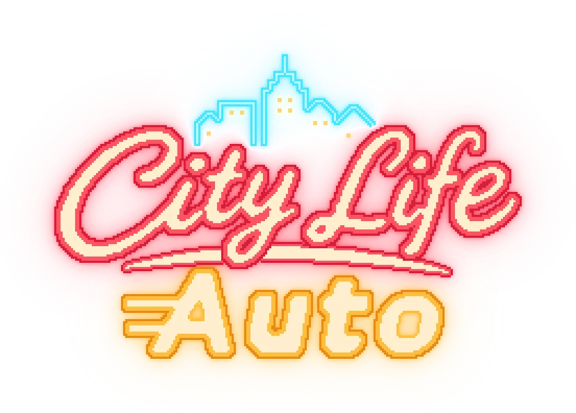

City Life Auto
A free multiplayer city sandbox you play in your web browser.
PLAY NOWWhat it is
City Life Auto is an online game seen from above, in the spirit of the classic top-down city games. You arrive in town by train and make a life however you like: buy a car (or steal one), take jobs, run errands, go fishing or surfing, shoot pool, play cards - or turn to crime and stay ahead of the police. Everyone online shares the same city.
- Plays in the browser on a computer or a phone - nothing to download or install.
- Keyboard and mouse, a gamepad, or touch controls.
- Free to play. Jump in as a guest in seconds.
- For players 13 and older (under 18 with a parent's permission).
Accounts and sign-in
You never have to sign in: guests can play right away. An account is only there to keep your character and progress safe and let you continue on another device. You can sign in with Google, Discord, an email and password, or a passkey.
When you sign in with Google, the game asks Google only for an anonymous account id (the "openid" scope) so it can recognize you next time. It does not receive your name, email address, picture, contacts or any other Google data. Discord sign-in works the same way. The privacy policy explains exactly what is kept and how to delete it.